")
")
Die Richtungslogik unterstützt Sie beim exakten Platzieren der Zeichnungsmarke und bei diversen Zeichenfunktionen, z. B. beim Zeichnen einer Linie in eine exakt definierte Richtung. Sie müssen lediglich per Mausklick oder durch Eingabe einer Richtungsnummer eine grobe Richtung vorgeben. Die Eingabe eines Vorzeichens ist nicht notwendig. Je nach Richtungsangabe genügt dann die Entfernungsangabe in X-Richtung oder Y-Richtung.
Richtungsangaben |
|
|---|---|
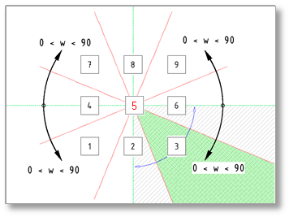 |
Ziffer 1: schräg nach links - (0 < α < 90°) Ziffer 2: senkrecht nach unten Ziffer 3: schräg nach rechts unten - (0 < α < 90°) Ziffer 4: horizontal nach links Ziffer 5: aktuelle Position der Zeichenmarke Ziffer 6: horizontal nach rechts Ziffer 7: schräg nach links oben - (0 < α < 90°) Ziffer 8: senkrecht nach oben Ziffer 9: schräg nach rechts oben - (0 < α < 90°) Hier können Winkel größer als 0° und kleiner als 90° eingegeben werden. Hinweis: Die Position der Zeichenmarke entspricht immer dem Koordinatenursprung [Ziffer 5]. |
Wenn Sie mit der Richtungslogik arbeiten, werden Sie in der Abfragezeile zunächst zur Angabe der gewünschten Richtung aufgefordert [Richtung]. Bezugspunkt für die Richtungsangabe ist in jedem Fall die aktuelle Position der Zeichenmarke; entsprechend der Ziffer 5 auf der Ziffernanordnung. Die Richtungsangabe kann aus der Anordnung der Ziffern auf dem Tastatur-Ziffernblock abgeleitet werden.
Wenn im Eingabefeld schon die richtige Richtungsnummer steht, können Sie diese mit Rechtsklick oder der Eingabetaste bestätigen.
Zeichenmarke bewegen oder Linie zeichnen
Im Funktionsbereich können Sie mit den Schaltflächen [Bewege] oder [Zeichn] die Zeichenmarke an eine bestimmte Position bewegen oder direkt Linien zeichnen.
|
[Bewege] verschiebt die Zeichenmarke. [Zeichn] erzeugt Linien, wobei die Zeichenmarke an den Endpunkt der Linie gesetzt wird. Tipp: Zwischen Bewege und Zeichn können Sie mit der TAB-Taste umschalten. |


Linie zeichnen
Es gibt drei Möglichkeiten, Linien zu zeichnen oder die Zeichenmarke zu bewegen:
1.Freies Zeichnen oder Bewegen
Linien oder Zeichenmarke ohne Eingabe von Differenzen frei zeichnen bzw. bewegen.
§Stellen Sie Retaus ein.
§Wechseln Sie in den Bewege-Modus.
§Klicken Sie mit der linken Maustaste zweimal auf die Stelle auf der Zeichenfläche, an der die Linie beginnen soll. [Richtung]; [X-Wert].
§Schalten Sie auf Zeichn um und doppelklicken Sie an die Stelle (siehe Bild: Richtungsangaben), wo die Linie enden soll. [Richtung]; [X-Wert]; [Y-Wert].
Beachten Sie, dass Punkte gefangen werden, wenn sich diese im Fangbereich des Cursors befinden.
|
|||||||||||||||||||||||||||
2.Genaues Zeichnen oder Bewegen
Linien oder Zeichenmarke ohne Eingabe von Differenzen genau zeichnen bzw. bewegen.
§Stellen Sie Retaus ein.
§Klicken Sie in einen Bereich (siehe Bild: Richtungsangaben). Die Richtung wird in das Eingabefeld geschrieben. [Richtung].
§Geben Sie die wahre Länge mit positiven Werten für X und Y in der eingestellten Eingabeeinheit ein und bestätigen Sie jeweils mit der Eingabetaste. [X-Wert]; [Y-Wert].
Durch den Maßstab wird die Linie "richtig" auf dem Blatt gezeichnet.
Alternativ:
Klicken Sie mit der linken Maustaste Linien (Anfang, Mitte, Ende), Kreise (Mittelpunkt), Teilkreise (Anfang, Mitte, Ende), Schnittpunkte von Linien und/oder Kreisen oder Hilfspunkte an, um den Linienendpunkt oder die Lage der Zeichenmarke zu bestimmen.
|
|||||||||||||||||||||||||||
3.Bezogenes Zeichnen oder Bewegen mit Differenzeingabe
Linien und Zeichenmarke mit Eingabe von Differenzen exakt zeichnen bzw. bewegen.
§Stellen Sie Retan ein.
§Klicken Sie in einen Bereich (siehe Bild: Richtungsangaben). Die Richtung wird in das Eingabefeld geschrieben. [Richtung].
§Klicken Sie einen Punkt einer Linie oder eines Kreises mit Linksklick an.
Die Elementkennung wird in die Eingabe geschrieben.
§Geben Sie nach der Elementkennung die Differenz ein und bestätigen Sie jeweils mit der Eingabetaste. [X-Wert]; [Y-Wert].
Verwenden Sie bei der Eingabe der Länge keine Leerzeichen!
|
||||||||||||||||||
Zeichenfunktionen
Unter der Abfrageleiste, im oberen linken Bereich der Programmoberfläche, finden Sie zusätzliche Optionen zum Zeichnen von Elementen. Mit den Zeichenfunktionen können Sie unterschiedliche Planelemente erstellen, die Ihnen als Grundlage für weitere Bearbeitungen dienen. Erstellen Sie z. B. Stützen, Durchbrüche und andere geometrische Elemente, um schnell das gewünschte Ergebnis zu erreichen.
Rechteck über Diagonalpunkte konstruieren
Tastenkürzel: R
|
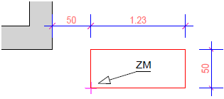 |
Geben Sie einen X- und Y-Wert für die Seitenlängen ein. Bestätigen Sie jeweils mit der Eingabetaste. [X-Wert]; [Y-Wert].
|
Rechteck von einem Mittelpunkt aus konstruieren
Tastenkürzel: M
|
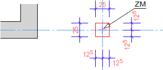 |
Befindet sich die Zeichenmarke (ZM) z. B. auf einem Achsenschnittpunkt, können Sie auf diese Weise rechteckige Stützen durch die Angabe der X- und Y Abmessungen zeichnen. Geben Sie einen X- und Y-Wert für die Seitenlängen ein. Bestätigen Sie jeweils mit der Eingabetaste. [X-Wert]; [Y-Wert].
|
Durchbruch zeichnen
Tastenkürzel: D
|
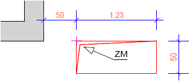 |
Durch die Eingabe der Werte für X und Y wird ein Rechteck und gleichzeitig ein "Schatten" angelegt. Geben Sie einen X- und Y-Wert für die Seitenlängen ein. Bestätigen Sie jeweils mit der Eingabetaste. [X-Wert]; [Y-Wert].
|
Linie tangential zu einem Kreis zeichnen
Tastenkürzel: T
|
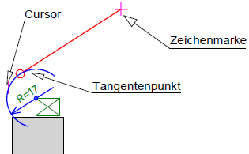 |
Die Lage der Tangente ist abhängig von der gewählten Seite des Kreises. Setzen Sie die Zeichenmarke im Bewege-Modus an eine beliebige Stelle. Wechseln Sie in den Zeichnen-Modus und klicken Sie den Kreis auf der gewünschten Seite an.
|
Lot auf/von Linie zeichnen
Tastenkürzel: L
|
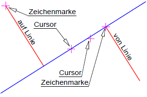 |
Lot auf Linie Von der Zeichenmarke aus wird das Lot auf die angeklickte Linie gefällt.
Lot von Linie Die Zeichenmarke befindet sich auf einer Linie. Achten Sie beim Anklicken der Linie darauf, auf welcher Seite sich der Cursor befindet. Daraus ergibt sich die Richtung. Geben Sie danach die Länge der lotrechten Linie an.
|
Lot auf/von Kreis zeichnen
Tastenkürzel: K
|
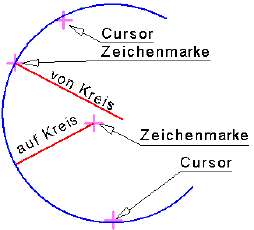 |
Von der Zeichenmarke aus wird das Lot auf den angeklickten Kreis gefällt. Befindet sich die Zeichenmarke innerhalb des Kreises, sind zwei Lotlinien möglich. Klicken Sie auf den Kreisabschnitt, auf den das Lot gefällt werden soll. Lot auf Kreis
Lot von Kreis Die Zeichenmarke befindet sich auf dem Kreis. Wird die Länge mit einem negativen Vorzeichen angegebenen, wird die Lotlinie Richtung Mittelpunkt gezeichnet. Mit positivem Vorzeichen wird die Lotlinie vom Mittelpunkt weg gezeichnet.
|
Zeichnen eines Grundrisses mit Richtungslogik (Beispiel)
Damit alle Eingaben nachvollziehbar sind, ist es empfehlenswert, eine neue Zeichnung anzulegen. Als Eingabeeinheit wird für die Beispielzeichnung m (Meter) eingestellt. [Optionen | Einstellungen → Eingabeeinheit].
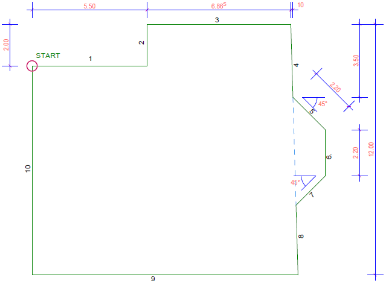 |
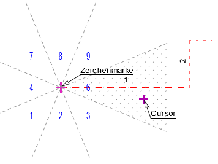 |
Im unteren Funktionsbereich finden Sie die Schaltflächen Bewege und Zeichn. Hier entscheiden Sie, ob Sie die Zeichenmarke bewegen oder etwas zeichnen möchten. Da in der Regel zunächst die Zeichenmarke positioniert werden muss, ist die Funktion Bewege vorausgewählt. Bevor Sie mit dem eigentlichen Zeichen beginnen, müssen Sie zunächst die Zeichenmarke an den Startpunkt setzen. [Richtung]; [X-Wert] §Bewegen Sie den Cursor an eine geeignete Stelle auf der Zeichnung und platzieren Sie die Zeichenmarke mit einem doppelten Linksklick. [Richtung]; [X-Wert]; [Y-Wert] §Wechseln Sie in den Zeichenmodus Zeichn. Zwischen Bewege und Zeichn können Sie mit der Tab-Taste wechseln. §Bewegen Sie den Cursor neben die Zeichenmarke, innerhalb des Sektors Nr. 6, und klicken Sie die linke Maustaste. [Richtung]. In der Eingabe wird die Richtungsnummer 6 angezeigt. Alternativ können Sie die Richtungsnummer auch eintippen und mit der Eingabetaste bestätigen. §Geben Sie als Länge 5.5 (Meter) ein und bestätigen Sie mit der Eingabetaste. [X-Wert]. Die Linie (1) wird gezeichnet und die Zeichenmarke an das Linienende gesetzt. Da eine horizontale Linie gezeichnet wurde, wird die Y-Eingabe übersprungen. |
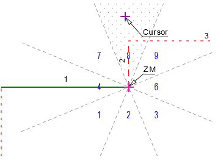 |
Zeichnen der Linie Nr. 2 und der Linie Nr. 3. Der Endpunkt der ersten Linie ist der Startpunkt der zweiten Linie. [Richtung]; [X-Wert]; [Y-Wert] §Bewegen Sie den Cursor oberhalb der Zeichenmarke (Sektor Nr. 8) und klicken Sie die linke Maustaste. [Richtung]. In der Eingabe wird die Richtungsnummer 8 angezeigt. Da eine vertikale Linie gezeichnet wird, wird die X-Eingabe übersprungen. §Geben Sie als Länge 2 ein und bestätigen Sie mit der Eingabetaste. [Y-Wert]. Die Linie (2) wird gezeichnet und die Zeichenmarke an das Linienende gesetzt. §Um die dritte Linie zu zeichnen, klicken Sie in den Sektor Nr. 6. [Richtung]. §Geben Sie als Länge 6.865 ein und bestätigen Sie mit der Eingabetaste. [X-Wert]. Die Linie (3) wird gezeichnet und die Zeichenmarke an das Linienende gesetzt. |
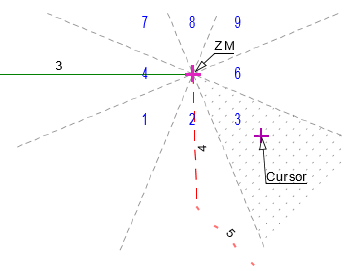 |
Die Linie Nr. 4 soll nun etwas von der Senkrechten abweichen. Als Richtungsnummer muss daher die Richtungsnummer 3 angegeben werden. [Richtung]; [X-Wert]; [Y-Wert] §Bewegen Sie den Cursor rechts unterhalb der Zeichenmarke (Sektor Nr. 3) auf einer gedachten Linie von 45° und klicken Sie die linke Maustaste. [Richtung]. In der Eingabe wird die Richtungsnummer 3 angezeigt. §Geben Sie für X .1 (=0.10m) und für Y 3.5 (=3.50m) ein. Bestätigen Sie die Eingaben jeweils mit der Eingabetaste. [X-Wert]; [Y-Wert]. Auf die Eingabe von Vorzeichen können Sie verzichten, da diese bereits in der Richtungsangabe berücksichtigt werden. Die Linie (4) wird gezeichnet und die Zeichenmarke an das Linienende gesetzt. |
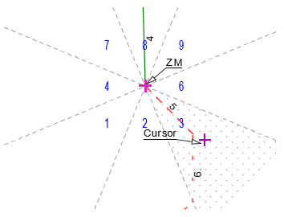 |
Zeichnen der Linie Nr. 5 und der Linie Nr. 6. Die fünfte Linie wird in die gleiche Richtung wie die dritte Linie gezeichnet. Sie können zum Bestätigen einer bereits in der Eingabe stehenden Angabe die rechte Maustaste (Rechtsklick) nutzen. Außerdem wird für das Konstruieren der fünften Linie die Hilfsfunktion W [Winkel] für eine Winkelangabe verwendet. [Richtung]; [X-Wert]; [Y-Wert] §Übernehmen Sie die Richtungsangabe 3 mit einem Klick auf die rechte Maustaste. [Richtung]. §Tippen Sie in die X-Eingabe zunächst ein w und direkt dahinter den Winkel 45 ein. Bestätigen Sie die Eingabe w45 mit der Eingabetaste. [X-Wert]. §Geben in die Y-Eingabe für die Länge 2.2 ein und bestätigen Sie. [Y-Wert]. Die Linie (5) wird gezeichnet und die Zeichenmarke an das Linienende gesetzt. [Richtung]; [X-Wert]; [Y-Wert] §Um die sechste Linie zu zeichnen, klicken Sie in den Sektor Nr. 2. [Richtung]. Die X-Eingabe wird übersprungen. §Übernehmen Sie den Wert 2.2 in der Y-Eingabe mit Rechtsklick. [Y-Wert]. Die Linie (6) wird senkrecht mit 2.20m Länge gezeichnet und die Zeichenmarke an das Linienende gesetzt. |
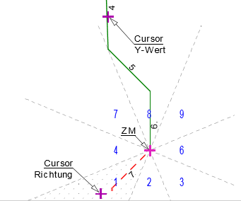 |
Die Linie Nr. 7 endet in der Verlängerung der Linie Nr. 4. Für das schnelle Konstruieren der siebten Linie wird die Hilfsfunktion S [Schnitt] verwendet. §Um die siebte Linie zu zeichnen, klicken Sie in den Sektor Nr. 1. [Richtung]. §Übernehmen Sie die X-Eingabe w45 mit Rechtsklick. [X-Wert]. Nun soll die Linie gezeichnet werden, indem sie mit der vierten Linie, die gezeichnet worden ist, zum Schnitt gebracht wird. §Tippen Sie in die Y-Eingabe ein s und klicken Sie die Linie Nr. 4 an. [Y-Wert]. Die Linie (7) wird gezeichnet und die Zeichenmarke an das Linienende gesetzt. |
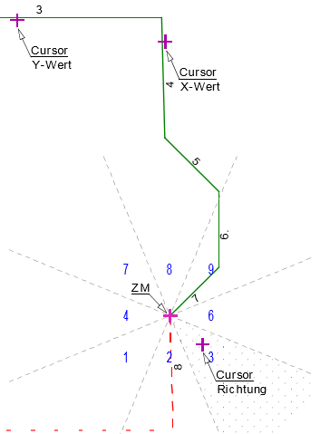 |
Die Linie Nr. 8 hat die gleiche Neigung wie die Linie Nr. 4. Die Länge ergibt sich aus der maximalen Tiefe des Gebäudes von 12.00m. Für das schnelle Konstruieren der achten Linie wird die Hilfsfunktion S [Schnitt] und die Differenzangabe [Retan] verwendet. §Um die achte Linie zu zeichnen, klicken Sie in den Sektor Nr. 3. [Richtung]. Nun soll der Winkel der Linie Nr. 4 übernommen werden. §Tippen Sie in die X-Eingabe ein p und klicken Sie die Linie Nr. 4 an. [X-Wert]. §Schalten Sie im Funktionsbereich auf die Funktion Retan um. [Y-Wert]. §Tippen Sie in die Y-Eingabe ein s ein und klicken Sie die Linie Nr. 3 an. Geben Sie anschließend einen Abstand von 12.00m mit einem negativen Vorzeichen ein. Bestätigen Sie die Eingabe s3-12 mit der Eingabetaste. Die Linie (8) wird gezeichnet und die Zeichenmarke an das Linienende gesetzt. Sie können den Differenzmodus jetzt wieder ausschalten. [Retaus]. |
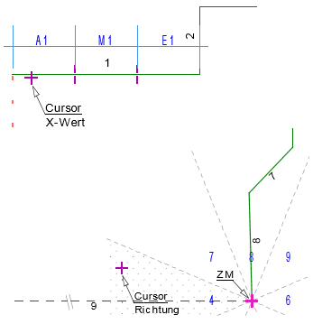 |
Zeichnen der Linie Nr. 9 und der Linie Nr.10. §Um die neunte Linie zu zeichnen, klicken Sie in den Sektor Nr. 4. [Richtung]. §Klicken Sie, anstatt einen X-Wert einzugeben, die erste Linie in der Nähe des Anfangspunktes (A1) an. Da die Differenzeingabe ausgeschaltet ist [Retaus], wird die Linie (9) sofort gezeichnet. §Um die zehnte Linie zu zeichnen, klicken Sie in den Sektor Nr. 8. [Richtung]. §Klicken Sie zum Abschluss den Anfangspunkt der Linie Nr. 1 (A1) an. Die Linie (10) wird gezeichnet und der Grundriss fertiggestellt. |
Siehe auch: